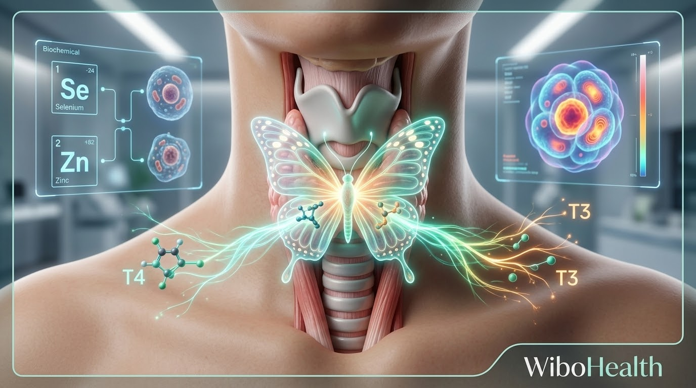

«عم تاكلي وجبة وحدة باليوم وما عم ينزل وزنك غرام؟ رفقاتك عم يبلعوا الأخضر واليابس وعم ينحفوا، وإنتِ بس تشمي ريحة الأكل بتزيدي كيلو؟! فوقها شعر عم يهر ع المخدة، برودة بالرجلين والأيدين حتى بعز الصيف، وكسل وتسطيح مو طبيعي؟! بتروحي للدكتور بيطلبلك تحليل غدة (TSH)، بيطلع التحليل وبيبتسم وبيقلك: مبروك تحليلك سليم وطبيعي 100%، إنتِ بس خففي أكل وتحركي شوي!»
لحظة استنوا شوي.. تعوا لأصدمكن صدمة سريرية خامسة: التحليل نظامي بالورقة.. بس غدتك نايمة نومة أهل الكهف بالخلايا! 😁
لما حدا يقلك تحليلك طبيعي وإنتِ حاسة جسمك متل القالب التلج المتجمد، اعطوه كف بقفا إيدكن فوراً! لانو في فرق شاسع بين إنو الغدة تكون عم تفرز، وبين إنو الهرمون عم يشتغل ويدخل جوا خلاياكِ.
1. شو هي الغدة الدرقية (الفراشة السحرية)؟
برقبتك في غدة صغيرة بتشبه الفراشة، هي مسؤولة عن توربينات الحرق والميتوكوندريا بكل خلية بجسمك! إذا الفراشة نشيطة: جسمك بيحرق الأكل طاقة وحرارة، شعرك بيلمع، وبشرتك مشدودة.
إذا الفراشة كسولة: جسمك بيقلب ع نمط "حفظ الطاقة"، بيخزن كل لقمة دهون، وبتحسي حالك سيارة ماشية والفرام مشدود!
2. كذبة فحص الـ (TSH) السطحي:
تحليل TSH هو هرمون طالع من الدماغ، مو من الغدة نفسها! هاد الهرمون متل زمور سيارة؛ أحياناً الزمور بكون ساكت والتحليل طالع 2.5 أو 3، بس جوا الخلايا ما في حرق نهائياً.
الغدة بتفرز هرمون اسمو (T4)، وهاد الهرمون "خامل وكسول" وما بيحرق شي! مشان يشتغل ويحرق دهون، لازم يسافر بالدم لعند الكبد والأمعاء ليتحول للهرمون الفعال النفاث اللي اسمو (T3).

تحول هرمون T4 الخامل إلى هرمون T3 النشط في الكبد بمساعدة السيلينيوم والزنك3. مين اللي عم يربط فرامات الحرق ويخرب التحويل؟
1. الكبد الدهني: 80% من تحويل هرمون الحرق بيصير بالكبد! إذا الكبد مشحم بالزيوت المهدرجة وسكر الفركتوز، التحويل بيوقف فوراً!
2. التوتر والكورتيزول العالي والدايت القاسي: لما تجوعي حالك كتير وتتوتري، الكبد بيحول هرمون الحرق لهرمون خبيث اسمو (Reverse T3)؛ هاد قفل حديد بيسكر الحرق تماماً!
3. نقص المعادن المفتاحية: التحويل بيحتاج مفكات كيميائية أساسية: السيلينيوم، الزنك، واليود.
4. علامات إنو غدتك عم تعاني بالسر:
- تساقط شعر واضح وخاصة تساقط الثلث الخارجي من الحواجب.
- برودة مستمرة بالأطراف، وإمساك مزمن.
- انتفاخ بالوجه وتحت العيون الصبح أول ما تصحي.
- ثبات وزن عنيد حتى مع تقليل السعرات الحاد.
- ضبابية بالدماغ وضعف تركيز وعصبية سريعة.
5. الروشتة السريرية: كيف نصحي الفراشة ونشعل توربينات الحرق؟
- حبتين جوز برازيلي يومياً: الجوز البرازيلي فيه أعلى تركيز سيلينيوم طبيعي على الكوكب؛ حبتين باليوم بيعطوا كبدك الوقود ليشعل تحويل هرمون T3!
- ارفعي الزنك والحديد: من اللحوم الحمراء، البيض، وبذور اليقطين (بزر القرع).
- نظفي الكبد من الفركتوز والزيوت: لتريحي المصنع الرئيسي للتحويل.
- بطلي دايت المجاعة: الصيام المتقطع الذكي (14-16 ساعة) ممتاز، بس تجويع الجسم 24 ساعة بيخلي الغدة تفوت بإضراب وتفرز Reverse T3 لتبطئ الأيض!
- الملح البحري غير المكرر: للحصول على اليود الطبيعي مع المعادن النادرة.
🌸 برنامج إعادة ضبط الغدة والهرمونات (بإشراف مباشر)
إذا حابة تتبعي نظام سريري مخصص يعيد إقلاع وعمل الهرمونات والغدة وحرق الدهون بشكل طبيعي، تواصلي مع فريقنا الطبي لمعرفة الخطط المتاحة:
support@wibohealth.comغذوا الفراشة بسيلينيوم وزنك، ريحوا الكبد، وبطلوا توتر ومجاعات.. بتلاقوا التوربينات دارت والوزن بلش يدوب لحاله.. سهلة عليكن ولا صعبة؟؟ 👍🏻
المعلومات الواردة في هذا الدليل مقدمة لأغراض التثقيف الصحي والغذائي فقط، ولا تغني عن الاستشارة الطبية المباشرة، التشخيص السريري، أو تعديل الجرعات الدوائية المقررة من قبل طبيبك المعالج.